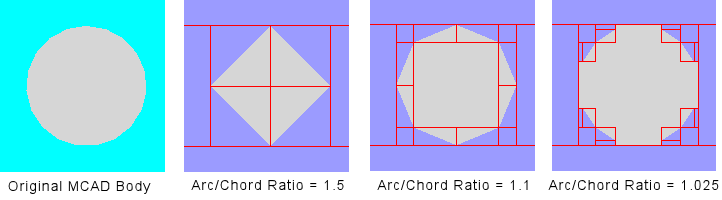
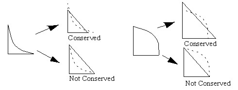
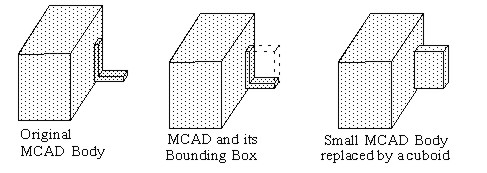
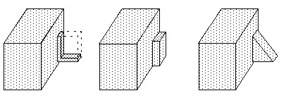
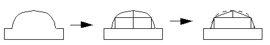
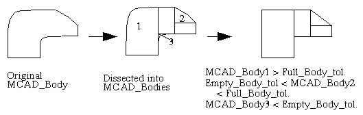

Dissect splits
the MCAD Body of an MCAD Part into several smaller MCAD Bodies based
on specified tolerances.
Procedure
- Select
an MCAD Part or Body and click the Dissect Body icon or choose to
open the Dissect Body dialog box.
- Specify tolerances to decide
whether to approximate these new MCAD Bodies with MCAD primitives
or to further split them into more MCAD Bodies as follows:
Set Minimum Volume Tolerance
% to delete MCAD bodies that are less than this value.
Set Empty Body Tolerance
% to replace MCAD bodies with less than this value with a cuboid.
Set Full Body Tolerance
% so that MCAD bodies greater than this tolerance are approximated
to MCAD primitives
MCAD Bodies greater than Empty
Body Tolerance % and less than Full Body Tolerance % are approximated
to MCAD prism primitives.
- Set an Arc/Chord Ratio to
approximate curves using cuboids and prisms. Non-planar MCAD Bodies
with an arc/chord ratio greater than that specified are sliced at
their mid-points, see Figure 1. The most accurate representations
are achieved using an Arc/Cord Ratio of between 1.01 and 1.001.
Figure 1. Arc/Chord Ratio Examples
- When dissecting 2D faces into
collapsed cuboids, ensure the resulting thickness in the collapse
direction is set using Collapse Below. This
is important for the preservation of through and in-plane thermal
resistance.
- Check the
Conserve Volume check box to conserve volume, see Figure 2.
Figure 2. Conserved and Non-Conserved
Volume Replacement
Results
Figure 3 to Figure 6 shows some examples of the Dissect
Body tool.
Figure 4. Empty Body Replacement
Figure 5. Full Body Replacement
Figure 6. Sliced Curve
Figure 7 shows a dissected MCAD Body where one
MCAD Body less than Empty Body Tolerance is deleted, and one MCAD
Body greater than Full Body Tolerance is replaced with a cuboid.
Figure 7. Example of Dissected Body